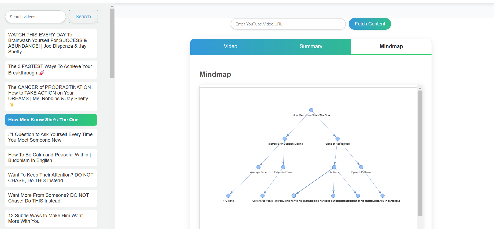
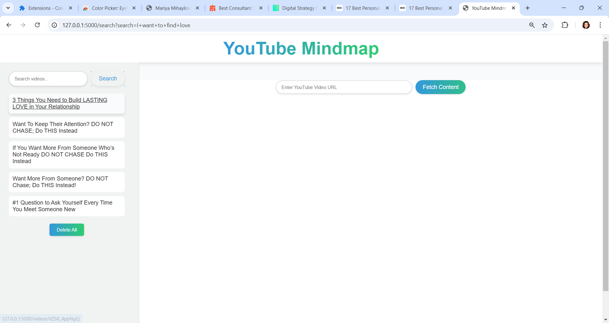
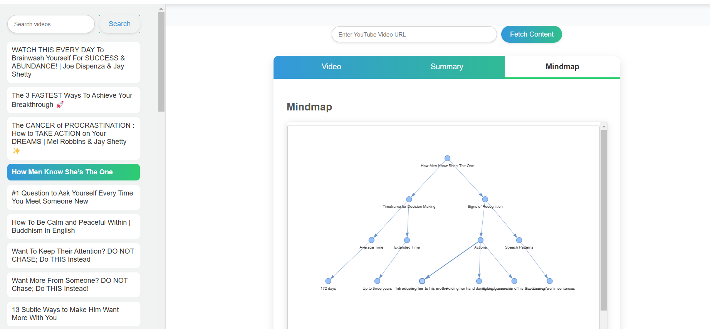
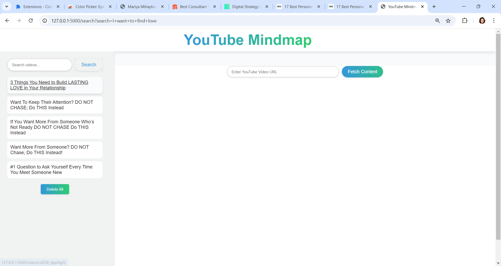
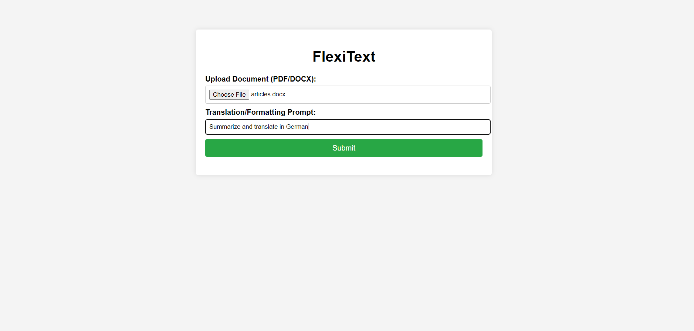
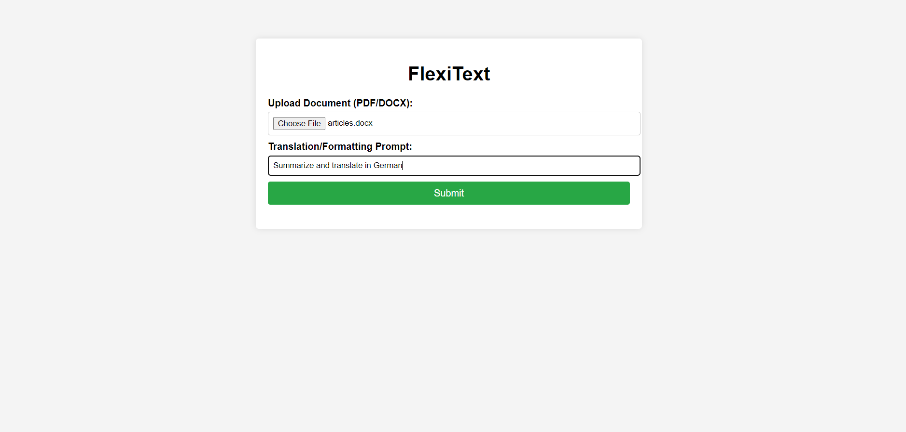

ЗДРАВЕЙТЕ, МОЕТО ИМЕ Е
МАРИЯ МИХАЙЛОВА
AI Engineer | Project Manager | Lifecoach
Добре дошли в моя личен уебсайт!
Аз съм експерт по изкуствен интелект и скоро сертифициран лайф коуч. Мисисята ми е да помагам на както на индивиди, така и корпорации да разгърнат пълния си потенциал. Като комбинирам иновативни инструменти с изкуствен интелект и персонализирано коучинг обучение, ще ви насоча към по-умни решения за по-голяма продуктивност и личностно развитие. Независимо дали искате да оптимизирате ежедневието си или да издигнете проектите си на ново ниво, аз съм тук, за да ви помогна да постигнете устойчив успех.


 



 
